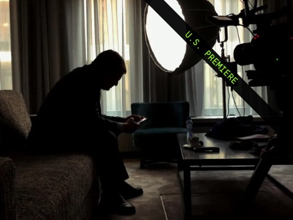

Panel · DX² · Double Exposure 2025
Fog of Falsehood: Disinformation, AI, and the Battle Over Reality
Thursday, October 30, 2025 · 1:00 PM–2:15 PM · Johns Hopkins University Bloomberg Center, Fourth Floor, Link Room
Governments have long used disinformation to destabilize publics, muddy accountability, and create atmospheres of deliberate confusion. Now, the rise of generative AI adds new layers to this fog, producing convincing falsehoods at astonishing speed and scale. In this session, investigative journalists and filmmakers probe the shifting terrain where truth itself can feel elusive and even unknowable.
How do journalists and documentary filmmakers navigate and expose realities when narratives are constantly rewritten and manipulated? What tools exist to cut through deliberate distortion—and what is the role of nonfiction cinema, with its unique capacity for storytelling and witnessing, in resisting the erosion of shared truth?
Recording
Films discussed
 BombshellBen Loeterman2025 · 82 min
BombshellBen Loeterman2025 · 82 min
The Six Billion Dollar ManEugene Jarecki2025 · 126 min
Sources
Related sessions
- 2026 · Fri Nov 6 · 12:15pmPanelFaked, Erased, Distorted: Does the Record Matter?Swapneel Mehta, Yvonne Ng, Sam Benstead, Mark Graham, Sig Libowitz
- 2025 · Thu Oct 30 · 2:15 PMPanel · DX²Race in Real TimeAnurima Bhargava, Byron Hurt, Laura Dyan Kezman, William Howell, Natalie Bullock Brown
- 2025 · Fri Oct 31 · 10:20 AMPanel · DX²Against the Current: Breaking Through the Dominant NarrativeCostas Christ, Norah Shapiro, Elizabeth Foy Larsen, Jacqueline Olive, Abraham Joffe
- 2025 · Fri Oct 31 · 11:30 AMPanelBetween Care and Truth: Ethical Dilemmas in Character-Driven DocumentaryPatricia Aufderheide, Hanna Lane Miller, Bridget Hunnicutt, Nick Price, Hanna Lane Miller
- 2025 · Fri Oct 31 · 3:20 PMConversationSubterfuge in Search of Truth: Mads Brügger in Conversation with Ted HopeMads Brügger, Ted Hope
- 2025 · Fri Oct 31 · 3:20pmPanel · DX²Subterfuge in Search of TruthMads Brügger, Ted Hope
- 2024 · Thu Nov 7 · 11:30 AMPanel · DX²Generative AI: Toward Best Practices in Documentary ProductionRachel Antell, Justine Bateman, Brandon Butler, Daniel Freed, Graham Sack
- 2024 · Thu Nov 7 · 1:30 PMPanel · DX²Cross Country: Unpacking Regionalism in Documentary FilmmakingAaron Asbury, Laura Deutch, Ryan Pearson, Ouida Washington, Nick Price